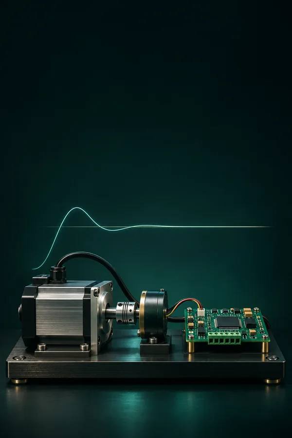
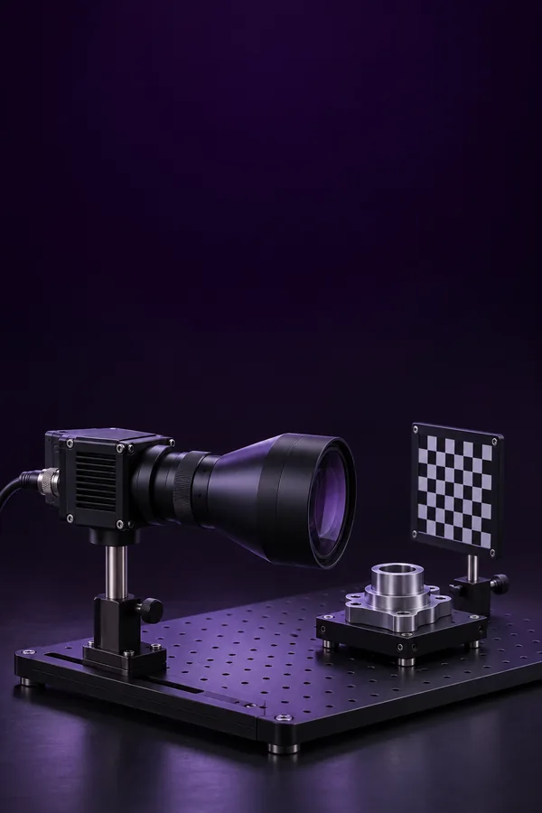

Robotics and Applications
机器人学及应用
Robotics and Applications
机器人学及应用

Principles of Automatic Control 自动控制原理
Robot Vision 机器人视觉 Machine Learning
机器学习
Machine Learning
机器学习
Teaching and student competition mentorship at Shenzhen Polytechnic University.